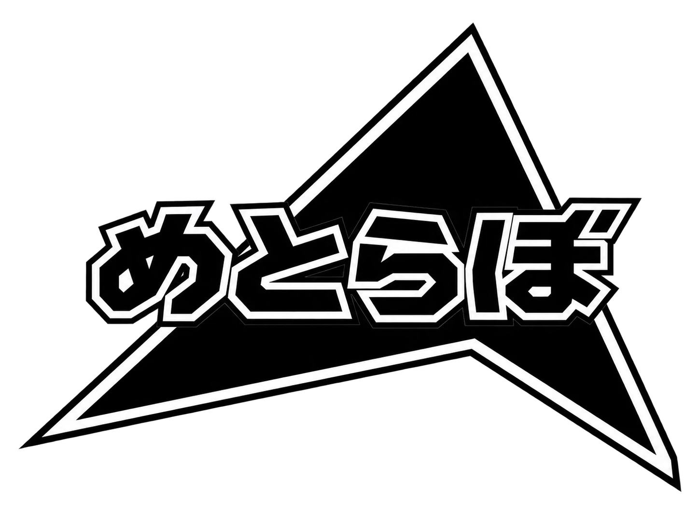

手動で登録する場合は、VCC / ALCOM の「Add Repository」に次の URL を入力してください。https://metrazero.github.io/vpm-repo/index.json
ツール一覧
- トグルをつくるやつ v1.0.0アバター向けツール
衣装やアクセサリのON/OFFメニューを Modular Avatar で非破壊に作るエディタ拡張。
解説ページ - 房を選んで髪色をかえるやつ v1.0.0アバター向けツール
シーンビューで髪の房をクリックして、房ごとに色を塗り分けるエディタ拡張。
解説ページ - アセットのショートカットをつくるやつ v1.1.0アバター・ワールド両方
よく使うフォルダやアセットのショートカットを、実際のフォルダ構成とは別に整理できるタブ。フォルダの色分け付き。
解説ページ - オブジェクトをプレイヤーについてこさせるやつ v1.0.0ワールド向けツール
オブジェクトをローカルプレイヤーの位置に追従させる UdonSharp スクリプト。軸ごとのON/OFFと範囲制限付き。
解説ページ - レイマーチングでスカイボックスをつくるやつ v1.1.0ワールド向けツール
時間帯・天気・街並みを選ぶだけで、街の夜景などのスカイボックス用マテリアルを作るエディタ拡張とシェーダー。
解説ページ - ジョインをおしらせするやつ v1.0.0ワールド向けツール
誰かがワールドに入ってきた・出ていったときに、目の前に通知を出す UdonSharp ギミック。人ごとに文言や音を変えられる。
解説ページ - オブジェクトをランダムにだすやつ v1.0.0ワールド向けツール
登録したオブジェクトを、設定した確率でまとめてON/OFFする UdonSharp スクリプト。抽選結果は全員で共有される。
解説ページ - 近づくとひらくドアにするやつ v1.0.0ワールド向けツール
プレイヤーが近づくとドアがスライドして開き、離れると閉じる UdonSharp スクリプト。Animator 不要で複数枚のドアに対応。
解説ページ - 昼と夜をきりかえるやつ v1.0.0ワールド向けツール
ワールド全体の昼／夜を全員で切り替え、場所ごとの空（スカイボックス）や昼だけ・夜だけのオブジェクトも切り替える UdonSharp ギミック。
解説ページ - 落ちても元の場所にもどれるやつBETA v0.1.0ワールド向けツール
エラーなどでワールドから落ちて同じインスタンスに入り直したとき、元いた場所へ自動で戻す UdonSharp スクリプト。
解説ページ - 持ったものの大きさをかえるやつ v1.0.0ワールド向けツール
Pickup を片手で持ち、もう片方の手のグラブで両手を近づける・離すと縮小・拡大できる UdonSharp スクリプト（VR 向け）。
解説ページ